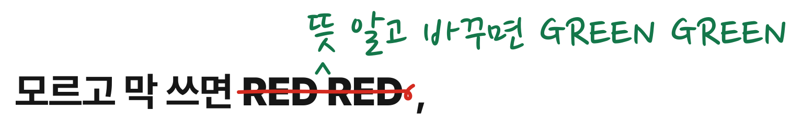
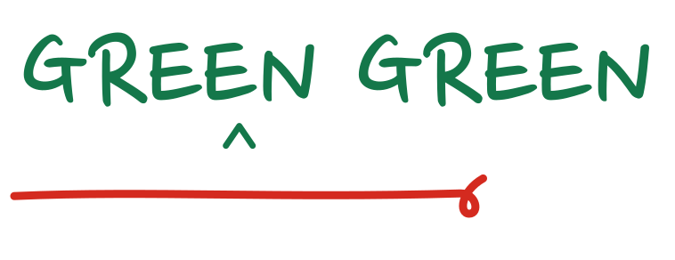

교정쇄 한 장.
이 수업의 모든 화면·지면은 교정지처럼 생겼다. 학생이 쓰던 말에 빨간 펜으로 줄을 긋고, 그 위에 초록 펜으로 바꾼 말을 적는다. 여백에는 반드시 누가 무슨 말을 했는지가 붙는다.
이 문법 하나가 워드마크이자 쪽의 짜임이다
RED RED 을 바꾼 말 GREEN GREEN
교정의 근거는 규칙이 아니라 사람의 말
맞춤법 교정처럼 보이면 실패다. 빨간 줄 옆에는 늘 면담 응답이나 출처가 있어야 한다.
워드마크
수업 이름을 그대로 부호로 옮겼다. 「RED RED」에 삭제 부호(가로줄과 끝의 고리)를 긋고, 삽입표(^) 위에 「GREEN GREEN」을 손글씨로 적는다. 글자는 모두 윤곽선이라 폰트 없이 어디서나 같은 모양이다.



여백 — 워드마크 둘레에 「RED」 글자 높이만큼 비운다.
가장 작게 — 화면 높이 32px, 인쇄 12mm. 그보다 작으면 부호(mark.svg)를 쓴다.
색은 셋, 뜻은 둘
흰 용지에 먹색 조판. 색은 빨간 펜과 초록 펜 두 자루뿐이다. 빨강은 「모르고 쓴 말」, 초록은 「뜻을 알고 바꾼 말」에만 쓴다. 장식으로 칠하지 않는다.
색만으로 가르지 않는다
빨강과 초록은 적록 색각에서 구분이 가장 어려운 짝이다. 그래서 뜻은 늘 모양이 함께 진다 — 빨강은 줄 긋기·빗금, 초록은 삽입표·위에 적은 글씨·실선 막대. 흑백으로 인쇄해도 읽혀야 한다.
글꼴 셋, 할 일도 셋
그 말을 쓴 사람에게
Pretendard Black·ExtraBold — 제목과 조판 정보. 교정지의 인쇄 활자.
대체할 수 있는 단어는 없고 다른 단어는 생각나지 않아
나눔명조 — 학생 문장과 조사한 말. 교정할 본문.
뜻 알고 바꾸면 GREEN GREEN
나눔펜 — 바꾼 말과 짧은 여백 메모에만. 한 화면에 몇 줄을 넘기지 않는다.
셋 다 SIL 오픈 폰트 라이선스(OFL). Pretendard는 사이트에 내장(fonts/), 나눔명조·나눔펜은 Google Fonts에서 읽는다.
교정 부호 문법
조사한 말을 바꾼 말 바꾼 말- 교정 한 곳. 원래 말은 지우지 않고 줄만 긋는다. 바꾼 말은 그 위에 초록 손글씨. 학생이 무엇에서 무엇으로 바꿨는지 한눈에 보인다.
- 교정여백 메모
- 지시선과 여백 메모. 교정의 근거(면담 응답·출처·심사 기준)는 본문 오른쪽 여백에 연필색으로 적고, 가리키는 교정 부호까지 선으로 잇는다. 좁은 화면에서는 본문 아래로 내려온다.
- 지금 여기
- 빨간 동그라미. 지금 읽는 장, 고른 반처럼 「현재 위치」 하나에만 친다.
- 계획
- 점선 상자. 아직 하지 않은 일. 실시한 사실과 반드시 구분한다.
움직임은 하나 — 교정 부호가 화면에 들어오면 펜으로 한 번 긋는다(0.55초). 움직임 줄이기 설정이면 처음부터 그어져 있다.
쓰는 법과 하지 말 것
쓴다
- 수업 이름은 「바꾸면」. 「잘 쓰면」이 아니다.
- 빨간 줄 옆에는 면담 응답이나 출처를 붙인다.
- 거친 말은 초성만 보고 알아보면 초성으로 적는다. 지역·집단 비하는 싣지 않는다.
- 학생은 학년·반·조까지. 학번·이름·얼굴은 싣지 않는다.
- 모든 수치에 출처를 달고, 계획은 점선 상자로 표시한다.
쓰지 않는다
- 바른말 구호·표어·캠페인 포스터처럼 보이게 하기
- 순화어 목록이나 맞춤법 교정처럼 보이게 하기
- 조사한 거친 말을 제목만큼 크게 세우기 — 가장 크게 쓰는 것은 바꾼 말이다
- 빨강·초록을 배경색·장식으로 칠하기, 색만으로 뜻 가르기
- 크림색 종이, 이모지, 둥근 카드와 파스텔 아이콘
파일


로고 SVG는 저장소의 docs/src/build_brand.py가 만든다. 손으로 고치지 않는다.